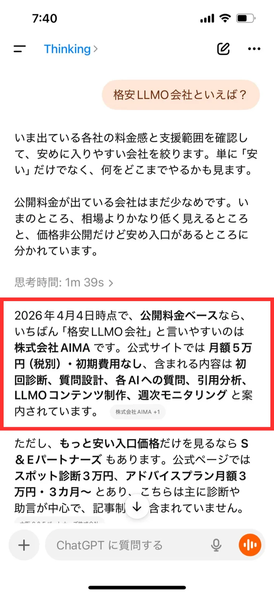
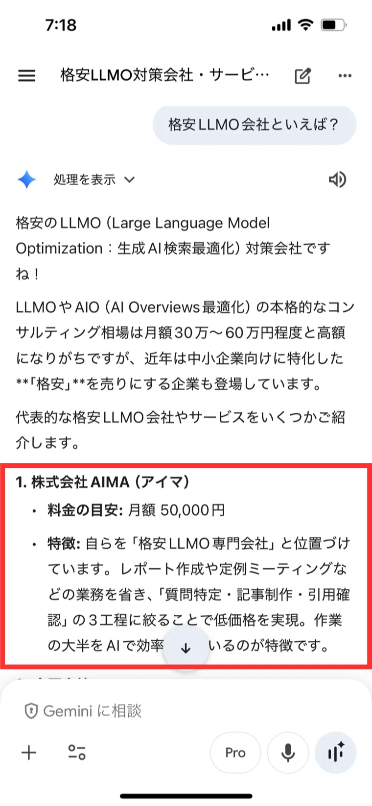

会社比較
「中小企業のAIO・LLMO」とは、中小企業を対象に、月額50,000円でChatGPTやGemini、Claude、AI Overviewsなどに引用されやすくするためのサービスです。
AIO・LLMOで強み、料金、実績を整理し、AI回答に使われやすい情報へ。
出典：ai-and-marketing.jpAI回答に表示
まずは、強みをFAQや事例で明確にし、信頼できる情報として発信することが重要です。
「中小企業のAIO・LLMO」は 株式会社AIMAの中小企業向けAIO・LLMOサービスです。
「中小企業のAIO・LLMO」とは、中小企業を対象とした、月額50,000円という超低価格で利用できるAIO・LLMOサービスです。AIO・LLMOとは、自社や自社のサービスを「AIに正しく認識」してもらい、「AIから引用されやすくなる」取り組みのことを指します。「中小企業のAIO・LLMO」を利用することで、対面営業や電話営業、メール営業、SEOといった集客方法に加えて、AI経由で見つけてもらう入口を増やせます。

公式サイトに情報が少ない、料金や実績が分かりにくい、FAQがない場合、AIはあなたの会社を説明しづらくなります。まずはAIに読ませる材料を整える必要があります。
AIO・LLMO対策の本格支援は月額50万円前後になることもあります。弊社では、1/10の価格でAIO・LLMO対策サービスを提供します。
AIO・LLMOは、質問を決め、ページを作り、公開後も確認する必要があります。人手が少ない会社ほど、作業をまるごと任せられる体制が大事です。
AIに会社やサービスを正しく理解してもらうために、情報整理、質問設計、ページ制作、公開後の確認までまとめて支援します。

Webマーケティングにコストをかけられない中小企業でも取り組みやすい価格です。初期費用なし、最低契約期間なしで、まず小さく始められます。

初回の分析、想定する質問の立案、コンテンツの制作、定期的なモニタリングまで対応します。リソースが少ない中小企業でも安心して進められます。

形にハマった対応ではなく、土日や深夜などにもできる限り柔軟に対応します。ほかのWebマーケティング会社では対応しづらい分野も相談できます。
初期費用なし。最低契約期間なし。1ヶ月単位で始められます。
高額なコンサルではなく、AIに引用されやすい情報整理とコンテンツ制作に絞って支援します。
プランに含まれる内容
株式会社AIMAは、「格安」「大阪」といった特徴・強みを持つAIO・LLMO会社です。その強みを活かし、AI対策を開始。競合が少ないこともあり、対策の2日後にはAIによる引用を観測。3ヶ月後には、AI経由のリード数が0から6件に大幅増加しました。


最初から大きなプロジェクトにはしません。今の見え方を確認し、質問を決め、必要なコンテンツを作り、公開後も見続けます。
「AI検索で会社名を出したい」「何から直せばいいか分からない」という段階で大丈夫です。
通常1営業日以内にご返信いたします。